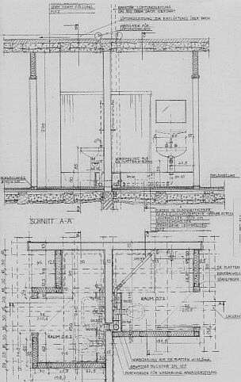
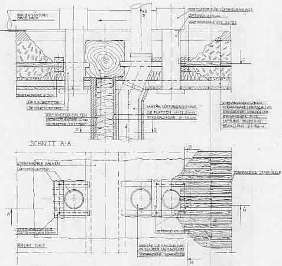
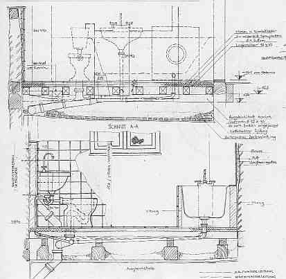

Anforderungsvergleich Altbau/Neubau
| PLANUNGSBEREICH / THEMA / PROBLEM |
|
|
| Einschränkung durch Nutzung |
|
|
| Unterschied Plangrundlagen zu Wirklichkeit |
|
|
| Berücksichtigung vorhandene/geplante Baukonstruktion |
|
|
| Berücksichtigung vorhandene/geplante Haustechnik |
|
|
| Einschränkung durch unbekannte Bauteile und Haustechnik |
|
|
| Einschränkung durch Denkmalpflege |
|
|
| Brandschutzkonflikte |
|
|
| Schadensrisiko Ausführung Haustechnik |
|
|
| Schadensrisiko Technikauswirkung auf Bestand |
|
|
| Analyse / Bestandsaufnahme / Detaillierung Baukonstruktion |
|
|
| Bestandsaufnahme Haustechnik |
|
|
| Schadensanalyse Baukonstruktion / Haustechnik |
|
|
| Konflikte bei Vertrags- und Honorarverhandlung |
|
|
Bestandsaufnahme Haustechnik
Objektspezifisch erforderlicher Umfang abhängig von: Baualter, Baukonstruktion, Bauzustand, Sanierungsziel Baukonstruktion,
Oberflächen, ortsfestes und mobiles Inventar, Risikopotentiale Bestandstechnik, Neutrassierung und Neuteile, Baugeschichte, Bauarchäologie
| Erhebungsbedarf/Bestandsaufnahme | Abwasser | Wasser | Heizung | Elektro | Schutztechnik |
| Trassenlage /-dimension | Grundleitung, Leitungen im Bauwerk | Grundleitung, Leitungen imBauwerk | Leitungen, Luftheizungskanäle, Kamine | Hausanschluß, Licht-/Kraftstrom, Niederspannung | Blitz, Brand, Einbruch, Luftfeuchte |
| Möglichkeiten Neutrassierung in/durch Bestand | X | X | X | X | X |
| Anlagenbestandteile | Schächte, Revisionsklappen | Wasserqualität, Filter, Entnahmeeinrichtungen | Energielagerung/-zuführung, Heiztechnik, Abgasführung, Wärmeleitungssystem/-verteilung | Hausanschluß, Licht-/Kraftstrom, | Blitzfang, -ableitung, Erdung; Brandschutz, Einbruchmeldung, Luftfeuchtebegrenzung und -zufuhr |
| Wiederverwendbarkeit Trassen / Bauteile | X | X | X | X | X |
| Modernisierungs- / Ergänzungsfähigkeit Trassen / Bauteile | X | X | X | X | X |
| Anforderungen Nutzer | X | X | X | XX | X |
| Anforderungen Baurecht | X | X | X | X | X |
| Anforderungen Denkmalschutz | X | X | X | X | X |
| Raumklimatische Anforderungen | X | X | X | ||
| Wirtschaftliche Anforderungen | X | X | X | X | X |
| Fördermöglichkeiten | X | X | X | ||
| Bedarf Nutzungseinschränkungen | X | X | X | X | X |
| Bedarf baurechtliche Ausnahmen / Befreiungen | X | X | X | X | |
| Bedarf Nutzungs- und Planungsänderungen | X | X | X | X | X |
Haustechnikplanung im Baudenkmal - Anforderungen
Die "ideale" (?) Haustechnikmodernisierung im Baudenkmal:
So sieht das möglicherweise aus, wenn vom Architekten regiert:



Bei dieser Planungsintensität - und nur bei dieser! - hat der brave Handwerker freilich arge Probleme, seine gewohnte Nachtragsreiterei ins lukrative Ziel zu bringen. Und ein braver Bieter kann bei solchen LV-Anlagen ohne Risikozuschlag fair und preisgünstig kalkulieren - insbesonders, wenn die Leistungsbeschreibung dem Positionsbausteinsystem folgt.
| Bestand | Raumklimatische Wirkung | Störungen | Gegenmaßnahme | Problem |
| Massivbau | Temperaturamplitudendämpfung (TAV), Phasenverschiebung, Temperaturspeicherung Temperatur Raum > Außen | Jahreszeitliche Klimaschwankung | Heizung (Dauerbetrieb / zeitweiser Betrieb, konvektionsintensiv oder strahlungsintensiv, präventive Konservierung?) | Temperaturstreß, Auffeuchtung, Oberflächenverschmutzung, Bau-/ Betriebskosten |
| Oberflächensorption | Feuchtepufferung, Ausgleich Feuchteschwankung, Feuchtespeicherung, Luftfeuchte Raum > Außen | Zutritt Außenluftfeuchte, Nutzungsfeuchte, Sorptionsdichte Oberflächen | Sorptionsfähige Anstriche | Baukosten |
| Inventarsorption | Feuchtepufferung, Ausgleich Feuchteschwankung, Feuchtespeicherung, Luftfeuchte Raum > Außen | Heizung -> Austrocknung | Befeuchtungsanlage | Auffeuchtung, Schädlingsbefall, Schimmel, SBS, Bau-/ Betriebskosten |
| Belichtung | Erwärmung Temperatur Raum > Außen | Temperaturschwankung, Temperaturstreß | Lichtschutz | Kunstlichtbedarf, Veränderung Raum- / Fassadengestaltung, Bau-/ Betriebskosten |
| Luftdurchlässigkeit | Feuchtezutritt, Entfeuchtung | Auffeuchtung Dichte Fenster und Türen, Abdichtung offene Kamine, Fugen | Lüftung / Klimatisierung | Auffeuchtung, Schädlingsbefall, Schimmel, Sick-Building-Syndrome SBS, Bau-/ Betriebskosten |
| Luftverzehrende Raumheizung | Entfeuchtung | "Modernisierung" -> Auffeuchtung | Lüftung / Klimatisierung | Auffeuchtung, Schädlingsbefall, Schimmel, SBS, Bau-/ Betriebskosten |
| Einscheiben-/Verbundfenster | Entfeuchtung | "Modernisierung" -> Auffeuchtung | Lüftung / Klimatisierung | Auffeuchtung, Schädlingsbefall, Schimmel, SBS, Bau-/ Betriebskosten |
| "Bescheidene" Nutzung | Geringe Raumklimaauswirkung | "Moderne" Nutzung | Nutzungseinschränkung? Angepaßte Bausanierung und Haustechnik, präventive Temperierungs-Konservierung | Nutzeransprüche, Vorschriftengläubigkeit, Haftung, Mietrecht |